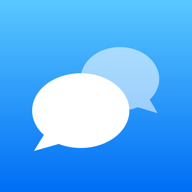
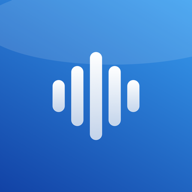

Privacy
Last updated 23 November 2026
The short version, for every app: we, the people who make Prism, Comms, Omni and Minutes, do not collect your data. Your notes, messages and meetings stay on a server you run or on your own device. No app has analytics, advertising or tracking, and none shares your data with third parties. Each app has its own section below.
 Prism and Prism Server
Prism and Prism Server
Prism does not collect your data. Your notes, messages, files and account live on a server you run (Prism Server, on your own Mac or computer). The Prism apps for Mac, iPhone and iPad talk only to the server you point them at. We, the people who make Prism, never receive your content and run no analytics, advertising or tracking of any kind.
What the apps store
- The address of your server, saved on the device.
- A sign-in token for that server, kept in the device's Keychain. It is sent only to your server.
- Copies of pages you opened and changes not yet sent, kept on the device so Prism works offline. Signing out deletes them.
None of this is sent to us.
Your server
Everything you put in Prism is stored by your Prism Server and its Parachute vault, on hardware you control. Whoever runs a server (you, or the person who invited you) is responsible for it. If someone else runs the server you use, their own privacy terms apply to what you store there.
Notifications
If you turn on notifications in the iPhone or iPad app, your device gets a push token from Apple, and the app gives it to your server. To reach Apple, a self-hosted server sends the token, plus a notification kind and an ID number, through the Prism push relay that we run. The relay never receives any content (no titles, names or text), and it does not store your token. It writes a generic message ("You have a new notification") and hands it to Apple. Like any web service, the relay and its host (Cloudflare) see the time of each request and your server's IP address. Turn notifications off at any time in Settings.

CommsComms (“Comms - an omni-messenger”) is an app for Mac and iPhone that shows the conversations your own Prism Server brings in. It talks only to the server you sign in to. We never receive your messages, contacts or attachments.
What the app stores
- The address of your server and your display settings, saved on the device.
- A sign-in token for that server, kept in the device's Keychain and sent only to your server. This token can reach the messaging part of your server only.
Conversations, photos and contacts are loaded from your server as you read them. Apart from the system's ordinary temporary caches, the app keeps no copy of its own. Signing out removes the token.
Where your messages go
Your server stores conversations in your own vault. It brings them in from the accounts you connect yourself: your mail server, a Mac of yours that runs Messages (for iMessage and SMS), and chat bridges you run for networks like WhatsApp, Signal, Telegram or Slack. A message you send travels over that network as it normally would. Comms cannot send anything until the person who runs the server switches sending on, and every message goes out through that one switch.
Notifications
If you allow notifications, your device gets a push token from Apple and the app gives it to your server. Your server sends notifications straight to Apple's push service with its own Apple key. By default a notification shows the sender and the start of the message, so that text passes through Apple's push service on its way to your device. Choose to hide previews in Comms' notification settings and a notification says only “New message”, with no name or text.
Sorting with AI
If the person who runs your server sets up an agent to sort conversations (urgent, needs a reply, and so on), the agent reads message text with the AI model chosen on that server: a model running on the server's own Mac, or a provider the server's owner signs up with, under that provider's terms. Without an agent, nothing is sorted and nothing is sent to a model.
 Omni
Omni
Omni is a personal-agent app for Mac and iPhone. It talks only to your Prism Server, which passes your requests to an agent that runs on hardware you control. We never receive your requests, drafts or vault.
What the app stores
- The address of your server, saved on the device.
- A sign-in token for that server, kept in the Keychain and sent only to your server.
The AI model
To answer you, the agent sends the text a request needs (your message and the notes it looked up) to the AI model configured on your server: a local model on your own Mac, or a provider you have an account with, under that provider's terms. Nothing else is shared.
Nothing leaves without you
Anything Omni would send or post for you, such as an email or a chat reply, waits as a card until you approve it. Omni asks before it joins a call.
Notifications
If you allow notifications, your server sends them straight to Apple's push service with its own Apple key. In Omni's notification settings you choose what they show: a short summary (the default), a headline only, or no content at all.

MinutesMinutes records and transcribes meetings on your Mac or iPhone. There is no Minutes account and no Minutes server: your recordings and notes stay on your device.
- Recording starts only when you start it. On a Mac, recording a call uses the system's audio recording permission and saves audio, never images of your screen.
- Transcription runs on the device with Apple's on-device speech recognition. If a device can't do that, Minutes reports an error instead of using a cloud service.
- Speaker separation runs on the device, with models you download yourself. Remembering a voice is a separate choice, and you can remove a remembered voice at any time.
- Summaries use Apple's on-device model where available. Minutes sets up no cloud summary service.
When data leaves the device
Only when you turn on one of these:
- iCloud sync, into your own private iCloud storage.
- A calendar: Apple Calendar on the device, or Google Calendar, which you sign in to in your browser. Calendar access is read only, and the Google sign-in is kept in the Keychain.
- Delivery to Prism: a meeting's notes, transcript and participants go to the Prism Server you paired, and nowhere else. Raw audio and voiceprints are not sent.
- An export you make yourself.
Minutes has no analytics or advertising code.
What we never do
- No accounts with us: there is nothing to sign up for.
- No analytics, crash reporting, advertising identifiers or third-party trackers in any of the apps.
- No selling or sharing of data, because we don't have any.
This website
prism.pub is a static page served by GitHub Pages. It sets no cookies and loads nothing from other sites. GitHub may keep standard server logs, such as IP addresses, under its own privacy statement.
Children
None of the apps is directed at children, and none collects data from anyone.
Changes and questions
If this policy changes, the new version will be published on this page, with a new date. The page's full history is public on GitHub. For questions, see Support.